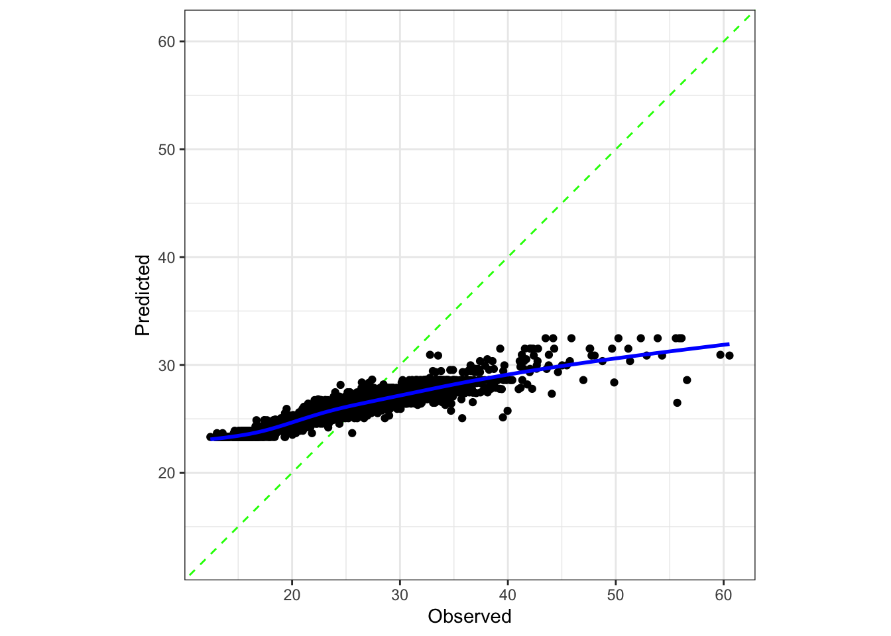
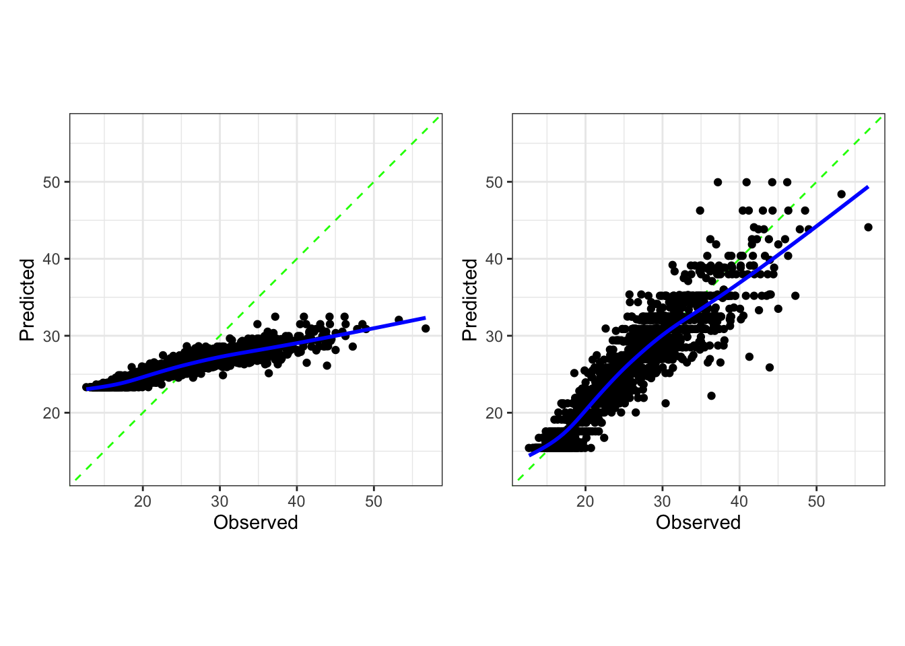

library(tidymodels)
library(bonsai) # also requires lightgbm package
library(container) # pak::pak(c("tidymodels/container@max"), ask = FALSE)
library(probably)
library(patchwork)
# ------------------------------------------------------------------------------
tidymodels_prefer()
theme_set(theme_bw())
options(pillar.advice = FALSE, pillar.min_title_chars = Inf)
# ------------------------------------------------------------------------------
data(deliveries, package = "modeldata")
set.seed(991)
delivery_split <- initial_validation_split(deliveries, prop = c(0.6, 0.2),
strata = time_to_delivery)
delivery_train <- training(delivery_split)
delivery_test <- testing(delivery_split)
delivery_val <- validation(delivery_split)container regression example
This is an example regression analysis to show how the container package might work.
We’ll use the food delivery data and start with a three-way split:
Let’s deliberately fit a regression model that has poor predicted values: a boosted tree with only three ensemble members:
bst_fit <-
boost_tree(trees = 3) %>%
set_engine("lightgbm") %>%
set_mode("regression") %>%
fit(time_to_delivery ~ ., data = delivery_train)We predict the validation set and see how bad things are:
reg_metrics <- metric_set(rmse, rsq)
bst_val_pred <- augment(bst_fit, delivery_val)
reg_metrics(bst_val_pred, truth = time_to_delivery, estimate = .pred)# A tibble: 2 × 3
.metric .estimator .estimate
<chr> <chr> <dbl>
1 rmse standard 5.46
2 rsq standard 0.850That R2 looks great! How well is it calibrated?
cal_plot_regression(bst_val_pred, truth = time_to_delivery, estimate = .pred)
Ooof. One of the calibration tools for the probably package might help this. Let’s use a linear regression with spline terms to fix it. First, we’ll resample the calibration model to see if it helps:
set.seed(10)
bst_val_pred %>%
vfold_cv() %>%
cal_validate_linear(truth = time_to_delivery, estimate = .pred,
smooth = TRUE, metrics = reg_metrics) %>%
collect_metrics()# A tibble: 4 × 7
.metric .type .estimator mean n std_err .config
<chr> <chr> <chr> <dbl> <int> <dbl> <chr>
1 rmse uncalibrated standard 5.45 10 0.122 config
2 rsq uncalibrated standard 0.851 10 0.0133 config
3 rmse calibrated standard 2.69 10 0.125 config
4 rsq calibrated standard 0.851 10 0.0133 config That seems promising. Let’s fit it to the validation set predictions:
bst_cal <- cal_estimate_linear(bst_val_pred, truth = time_to_delivery,
estimate = .pred, smooth = TRUE)We could manually use cal_apply() to adjust predictions, but instead, we’ll add it to the post-processing object:
post_obj <-
container(mode = "regression") %>%
adjust_numeric_calibration(bst_cal)
post_objregression post-processing object with 1 operationRe-calibrate numeric predictionsLet’s add another post-processor to limit the range of predictions (just as a demonstration):
post_obj <-
post_obj %>%
adjust_numeric_range(lower_limit = 0, upper_limit = 50)
post_objregression post-processing object with 2 operationsRe-calibrate numeric predictions
Constrain numeric predictions to be between [0, 50].We have to fit the post-processor to use it. However, there are no estimation steps in this instance since everything is either pre-trained (e.g., the calibrator) or user-defined (e.g., the limits). We’ll run fit() anyway, then apply it to the test results:
post_res <-
post_obj %>%
fit(bst_val_pred, outcome = c(time_to_delivery), estimate = c(.pred))
bst_test_pred <- augment(bst_fit, delivery_test)
# Without:
reg_metrics(bst_test_pred, truth = time_to_delivery, estimate = .pred)# A tibble: 2 × 3
.metric .estimator .estimate
<chr> <chr> <dbl>
1 rmse standard 5.14
2 rsq standard 0.848# With:
bst_test_proc_pred <-
post_res %>%
predict(bst_test_pred)
bst_test_proc_pred %>%
reg_metrics(truth = time_to_delivery, estimate = .pred)# A tibble: 2 × 3
.metric .estimator .estimate
<chr> <chr> <dbl>
1 rmse standard 2.61
2 rsq standard 0.848Visually:
before <- cal_plot_regression(bst_test_pred, truth = time_to_delivery,
estimate = .pred)
after <- cal_plot_regression(bst_test_proc_pred, truth = time_to_delivery,
estimate = .pred)
before + after